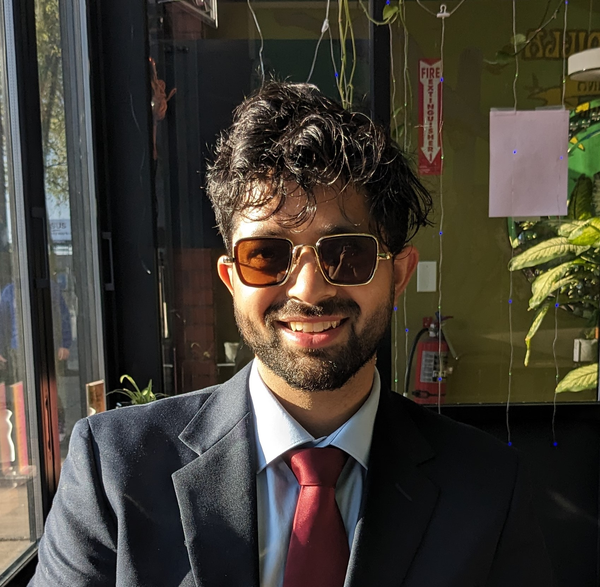

|  | Kumar Kshitij Patel
PhD student, |
I am a fifth-year PhD student at the Toyota Technological Institute at Chicago (TTIC), where I have the privilege of being advised by Prof. Nati Srebro and Prof. Lingxiao Wang. Throughout my PhD, I have explored various facets of collaborative learning, focusing on proving theoretical guarantees for optimization and ensuring the privacy of distributed algorithms amid data and systems heterogeneity. Recently, my research has expanded to examine the incentives that encourage agents to initiate and sustain these collaborations. A more in depth discussion about my research projects can be found here.
For an (mostly) up-to-date list of my publications, please visit my Google Scholar profile. You can also access my CV here.
During Summer 2023, I worked with Nidham Gazagnadou and Lingjuan Lyu from the Privacy Preserving Machine Learning team at Sony AI in Tokyo, Japan as a research intern. During summer 2020, I worked with the amazing team at Codeguru, Amazon Web Services as an applied scientist intern. And before joining TTIC, I obtained my BTech in Computer Science and Engineering at Indian Institute of Technology, Kanpur. There I was fortunate to work with Prof. Purushottam Kar on Bandit Learning algorithms. I also spent a year of my undergraduate on academic exchange at École Polytechnique Fédérale de Lausanne (EPFL) where I worked at the Machine Learning and Optimization Laboratory (MLO) with Prof. Martin Jaggi.
I am actively looking for postdoctoral positions starting next year in Fall 2025. I am interested in exploring research areas both related to and separate from my current projects, as detailed in my evolving research interests.
I am attending COLT to present our paper on lower and upper bounds for local SGD. Come say hi!
In July, I am visiting Sebastian Stich's group at the CISPA Helmhotz Center.
I am attending ICML to present some workshop papers, and organize the Data Economics social along with Kate Donahue. Please come to our social, if you are interested in or want to know more about the economics of data!
In August, I am attending IJCAI to present our papers on online optimization with fairness and defections in Federated Learning.
I organized a workshop on Theoritical Advances in Federated Learning last summer (2023) at TTIC.
I co-taught a tutorial at UAI'23 titled Online Optimization meets Federated Learning.
I served/am serving as a reviewer for STOC'21, TMLR, JMLR, ICML'21'22'24, NeurIPS'21'22'23'24, ICLR'22'23'24, AISTATS'22'23, Springer MLJ, as a session chair for ICML'22, NeurIPS'22, and as a volunteer for IJCAI'24, ICML'20, ICLR'20. I received the top reviewer award at ICLR'22, ICML'22, NeurIPS'22.
I am participating in the NSF-Simon's research collaboration on the Mathematics of Deep Learning (MoDL).
I co-organized the TTIC Student Workshop 2021, with Gene Li. We also organized a TTIC/Uchicago student theory seminar in Spring 2021. If you'd like to take over and re-start this series, please let me know.
I was a Teaching Assistant for the Convex Optmization course at TTIC during Winter'22'24 and a co-organizer for the Research at TTIC Colloquium for Fall-Winter 2021.
I participated in the Machine Learning Summer School at Tübingen, Germany during summer 2020.